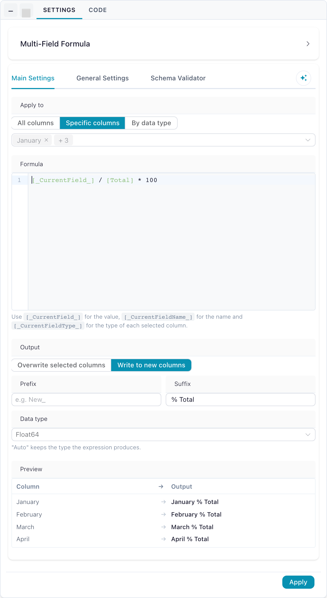
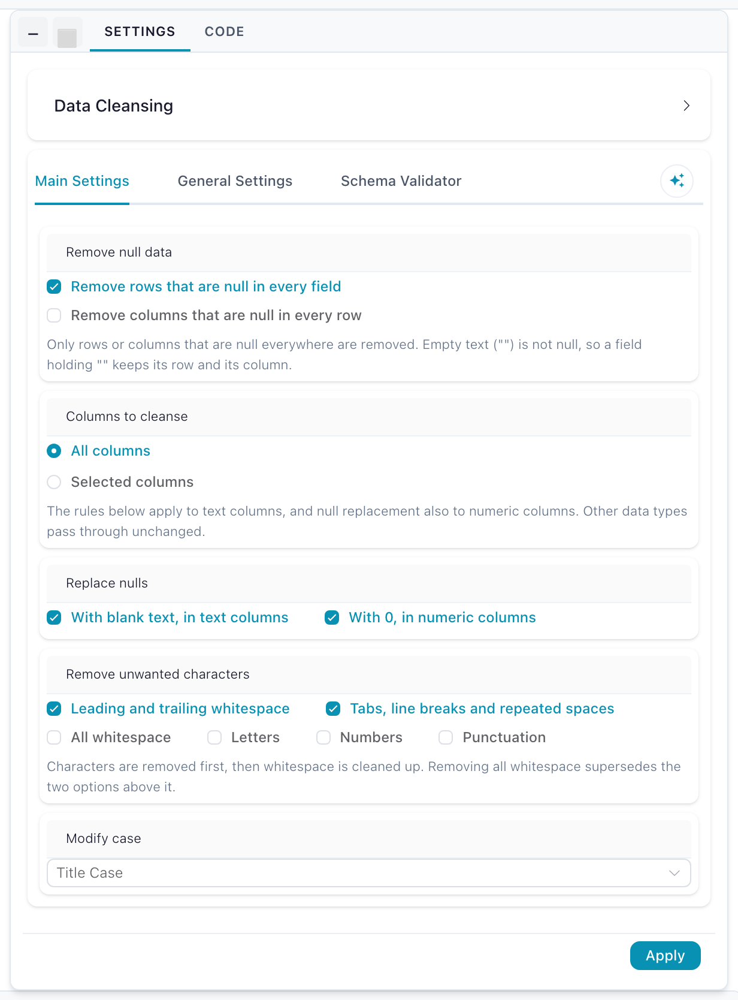

Transformations
Transformations reshape a dataset: choose rows, choose columns, calculate new values, clean up messy text. Most take one input and return one table, so they chain freely. Two exceptions: Filter data can send non-matching rows out of a second handle, and the code actions — SQL Query, Polars code and Python Script — accept up to 10 inputs each.
| Action | What it does | Lite |
|---|---|---|
| Filter data | Keep only the rows that match a condition | ● |
| Select data | Choose, rename and reorder columns | ● |
| Sort data | Order rows by one or more columns | ● |
| Formula | Calculate one new or replacement column | ● |
| Multi-field formula | Apply one calculation across many columns at once | |
| Data cleansing | Fix nulls, whitespace, stray characters and casing in one pass | |
| Drop duplicates | Remove repeated rows | ● |
| Rename columns | Rename many columns by one rule | ● |
| Add record Id | Number the rows, optionally restarting per group | ● |
| Take Sample | Work with the first N rows while you build | ● |
| Text to rows | Split a delimited cell into one row per value | |
| SQL Query | Query the connected inputs with SQL | |
| Polars code | Write a Polars expression directly | ● |
| Python Script | Run Python in an isolated kernel container |
In Flowfile Lite
The browser-only Flowfile Lite build includes the nine actions marked ● above. Multi-field formula, Data cleansing, Text to rows, SQL Query and Python Script need the full desktop or server build.
 Filter data
Filter data
Keeps only the rows that match a condition, in one of three modes.
Basic — pick a column, an operator and a value. No syntax to learn, and it covers string, numeric and date comparisons.
Advanced — write a formula that evaluates to true or false; only the true rows survive.
Split — instead of dropping the non-matching rows, send them out of a second output handle, so both halves stay in the flow.
Settings
| Setting | Description |
|---|---|
| Basic filter / Advanced filter | Switches between the point-and-click condition builder and the expression editor. Basic by default. |
| Single output / Split into pass/fail outputs | Turns the one output into two handles — P for matching rows, F for the rest. Single by default. |
| Column | The column the condition is evaluated against. Basic mode. |
| Operator | How the column is compared: Equals, Does not equal, Greater than, Less than, Contains, In, Between and their negations. Defaults to Equals. |
| Value | What the column is compared against — a comma-separated list for In, and the start of the range for Between. |
| And | The inclusive end of the range. Shown only when the operator is Between. |
| Advanced filter | The expression to evaluate per row. Advanced mode. |
| Advanced expression | Keeps |
|---|---|
[City] = 'Amsterdam' |
Rows where City is "Amsterdam" |
[Age] > 30 |
Rows where Age is over 30 |
[Country] = 'USA' and [Sales] > 100 |
Rows matching both conditions |
is_not_empty([email]) |
Rows that have an email address |
Any formula returning true/false works, including functions like contains(), between() and is_empty().
 Select data
Select data
Chooses which columns to keep, what to call them, and what order they appear in.
Settings
| Setting | Description |
|---|---|
| Column Selection | Which columns to keep. |
| Reordering | Drag columns into place, or sort them alphabetically. |
| Rename Column | A new name for any selected column; the data is untouched. |
| Keep Missing Fields | Keep columns in the selection list even when they are absent from the current input, so the node survives a source that gains the column back. |
A selected column that is missing from the input is marked unavailable rather than failing the node, and the order you set here is the order downstream actions see.
 Sort data
Sort data
Orders rows by one or more columns, each with its own direction.
Settings
| Setting | Description |
|---|---|
| Sort Columns | Columns to sort by, applied in the order listed. |
| Sort Order | asc or desc, per column. |
 Formula
Formula
Creates a new column, or replaces an existing one, by evaluating a formula for every row. If the name you give is new, the column is added; if it already exists, its values are replaced.
Formulas use the Flowfile formula language: reference columns as [column], call any built-in function, and branch with if ... then ... elseif ... else ... endif. The editor autocompletes column names and functions and shows inline documentation, and the formula compiles to a native Polars expression — there is no row-by-row Python cost.
Settings
| Setting | Description |
|---|---|
| Column Name | The name of the new or replaced column. |
| Formula | The expression to evaluate, for example round([price] * (1 - [discount]), 2). |
| Data Type | Auto infers the type from the formula. Set it explicitly to force a cast. |
Try formulas in your browser
The interactive formula playground runs the full language against sample data with nothing to install.
Multi-field formula
Runs one formula over many columns, instead of one Formula node per column — the same calculation across every numeric column, across a listed subset, or across the whole frame. Three placeholders bind to whichever column is being processed.
The drawer's Preview lists the columns the formula will touch and the names it will write, before you run anything.

| Placeholder | Binds to |
|---|---|
[_CurrentField_] |
The column's value — what the calculation works on. |
[_CurrentFieldName_] |
The column's name as text, e.g. "revenue". |
[_CurrentFieldType_] |
The column's data type as text, e.g. "Float64" or "String". |
Any other column can still be referenced by name, so [_CurrentField_] / [Total] is valid.
Settings
| Setting | Description |
|---|---|
| Apply to | Which columns the formula runs over: All columns, Specific columns, or By data type. All columns by default. |
| Select columns | The columns to target, in the order you pick them. Names no longer present in the input are skipped. Shown for Specific columns. |
| Select data type | The one group to target: Numeric, String, Date, Boolean, Binary, Complex or Other. Shown for By data type. |
| Formula | The expression evaluated once per targeted column. |
| Output | Overwrite selected columns replaces each source column; Write to new columns appends the results and keeps the sources. Overwrite by default. |
| Prefix / Suffix | Text wrapped around each source column's name to build the new name. At least one is required, and a generated name that already exists is an error. |
| Data type | The type every result is cast to. Auto keeps whatever the expression produces. |
Selecting nothing is not an error — the frame passes through unchanged. Overwriting leaves names and column order unchanged.
All expressions are evaluated in one pass, so a formula referencing a column that is itself being overwritten still reads that column's original value.
Example — each month as a share of the total. A table with a Total column and twelve month columns. Set Apply to → Specific columns → the twelve month columns, with the formula [_CurrentField_] / [Total] * 100. Set Output → Write to new columns, Suffix to % Total (the leading space is part of it) and Data type to Float64. The month columns keep their values and January % Total … December % Total are appended after them.
In Python this is multi_field_formula(). Exporting to Python renders it as a multi_field_formula() call in the FlowFrame modes; the pure-Polars mode reports it as unsupported.
Data cleansing
Fixes the usual problems in a raw export in one pass: rows and columns that hold nothing, nulls where a blank or a zero is wanted, stray whitespace, unwanted characters, and inconsistent casing.
A freshly dropped node is already valid — it fills nulls and trims whitespace on every column — so the drawer is where you narrow it down or switch on the stricter rules.

Settings
| Setting | Description |
|---|---|
| Remove null data | Two frame-wide toggles: drop rows that are null in every field, and drop columns that are null in every row. Both off by default. |
| Columns to cleanse | Whether the rules below run on All columns or only Selected columns. All columns by default. |
| Replace nulls | Fill nulls with blank text in text columns, and with 0 in numeric columns. Both on by default. |
| Remove unwanted characters | Trim leading and trailing whitespace (on by default); collapse tabs, line breaks and repeated spaces; strip all whitespace; or remove letters, numbers or punctuation. |
| Modify case | Leave unchanged, UPPERCASE, lowercase or Title Case. Unchanged by default. |
What each rule does
The two Remove null data rules look at the whole frame and ignore the column selection. Every other rule applies only to the columns you select, and only when the column's type matches: the null-to-blank, character and case rules change text columns, the null-to-zero rule changes numeric columns, and any other type passes through untouched even when selected. Column names, order and types are unchanged — only Remove columns that are null in every row can remove a column.
| Section | Option | Effect |
|---|---|---|
| Remove null data | Remove rows that are null in every field | Drops a row only when every column is null. An empty string is not null, so a row holding "" stays. |
| Remove null data | Remove columns that are null in every row | Drops a column only when it is null in every row. Decided from the data at run time, so the output schema can be narrower than the edit-time preview. |
| Columns to cleanse | All columns / Selected columns | Which columns the rules below apply to. Selected columns no longer present in the input are ignored. |
| Replace nulls | With blank text, in text columns | Nulls become "". On by default. |
| Replace nulls | With 0, in numeric columns | Nulls become 0. On by default. |
| Remove unwanted characters | Leading and trailing whitespace | Trims both ends. On by default. |
| Remove unwanted characters | Tabs, line breaks and repeated spaces | Collapses every run of whitespace into a single space. |
| Remove unwanted characters | All whitespace | Removes whitespace entirely. Supersedes the two options above it. |
| Remove unwanted characters | Letters / Numbers / Punctuation | Removes letters (including accented ones), digits, or ASCII punctuation. |
| Modify case | Leave unchanged / UPPERCASE / lowercase / Title Case | Casing applied last. Title Case follows Polars and capitalizes the letter after any non-letter, so 3rd street becomes 3Rd Street. |
Within a text column the rules run in a fixed order: fill nulls, remove letters, numbers and punctuation, clean up whitespace, then apply the casing rule. Removing characters first means the gaps they leave behind are collapsed by the whitespace step.
Cleanse before you join or group
Keys that differ only by trailing spaces or casing do not match. A Data cleansing node on each input with Leading and trailing whitespace and a casing rule turns "Amsterdam " and "amsterdam" into the same key before a Join or Group by sees them.
In Python this is data_cleansing(), and it exports to native Polars string expressions in every code export mode.
 Drop duplicates
Drop duplicates
Removes rows that repeat across the columns you nominate, keeping the first occurrence.
Settings
| Setting | Description |
|---|---|
| Columns | The columns duplicates are judged on. Two rows count as duplicates when these columns match, whatever the other columns hold. |
Rename columns
Renames many columns at once by applying a single rule, instead of editing names one by one in a Select data node.
Settings
| Setting | Description |
|---|---|
| Rename mode | The rule to apply: Prefix, Suffix, Formula or First row. Prefix by default. |
| Prefix / Suffix / Formula | The mode's own value. Only the one matching the selected mode is shown. |
| Apply to | Which columns the rule touches: All columns, Specific columns or By data type. All columns by default. |
| Select columns | The columns to rename. Shown for Specific columns. |
| Select data type | The one group to rename. Shown for By data type; nothing is renamed until a group is picked. |
| Mode | Effect |
|---|---|
| Prefix | Prepend a fixed string to each selected column name. |
| Suffix | Append a fixed string to each selected column name. |
| Formula | Compute the new name with a formula; [column_name] is bound to each column's current name, e.g. uppercase([column_name]) or "v2_" + [column_name]. |
| First row | Promote the first data row to column headers and drop it from the data. |
Only the columns you select are renamed. In first-row mode the first row is dropped regardless of the selection, and a null or empty header value raises an error.
 Add record Id
Add record Id
Adds a column holding an incrementing number — either one sequence across the whole table, or a sequence that restarts for each group.
Settings
| Setting | Description |
|---|---|
| Output Column Name | Name of the new column. Default record_id. |
| Offset | The number the sequence starts at. Default 1. |
| Group By | When on, the number restarts within each group instead of running across all rows. Default off. |
| Group By Columns | The columns defining those groups. Only used when Group By is on. |
 Take Sample
Take Sample
Keeps the first N rows, so you can iterate on a small slice before running the full dataset.
Settings
| Setting | Description |
|---|---|
| Sample Size | Number of rows to keep. Default 1000. |
 Text to rows
Text to rows
Splits a delimited cell into one row per value, repeating the rest of the row for each. A cell holding red,green,blue becomes three rows.
Settings
| Setting | Description |
|---|---|
| Column to Split | The column holding the delimited text. |
| Output Column Name | Name of the resulting column. Defaults to the original column. |
| Split by Fixed Value | When on, split on a fixed delimiter. Default ,. |
| Delimiter | The character to split on, for example ,, ; or \|. |
| Split by Column | Use values from another column as the delimiter instead of a fixed one. |
SQL Query
Runs a SQL SELECT across the connected inputs using the Polars SQL dialect. Each input is a table named input_1, input_2, … in connection order, and up to 10 can be connected at once. SQL Query nodes chain like any other transformation.
Settings
| Setting | Description |
|---|---|
| SQL Query | The statement to execute, referencing the connected inputs as input_1, input_2, … |
SELECT c.name, SUM(o.amount) AS total
FROM input_1 c
JOIN input_2 o ON c.id = o.customer_id
GROUP BY c.name
The node is read-only: a query must start with SELECT or WITH, and statements that modify data or schema — INSERT, UPDATE, DELETE, DROP, CREATE, ALTER, TRUNCATE — are rejected. Invalid or unsafe SQL surfaces as a node error before the flow runs.
Querying catalog tables
To run SQL across registered catalog tables rather than connected nodes, use the SQL editor.
 Polars code
Polars code
Writes a Polars expression directly, for transformations no other action covers.
Pipelines built with the Python API only fall back to this node for operations without a native equivalent; which operations become which node lists the calls that render as Select data, Filter data, Formula, and the other native nodes instead.
Settings
| Setting | Description |
|---|---|
| Code | The Polars code to run. The incoming frame is input_df — or input_df_0, input_df_1, … when several are connected. For multi-line code, assign the result to output_df. A commented example template is there to start from. |
input_df.filter(pl.col('Age') > 30)
result = input_df.select(['Name', 'City'])
filtered = result.filter(pl.col('City') == 'Amsterdam')
output_df = filtered.with_columns(pl.col('Name').alias('Customer_Name'))
Python Script
Executes Python in an isolated Docker kernel container, with a notebook-style editor of multiple cells, named inputs and outputs, variables that persist across executions within a flow, and the flowfile API for data I/O, artifacts, display and logging.
Settings
| Setting | Description |
|---|---|
| Kernel | The running kernel to execute on. |
| Code | The Python code, written in the notebook editor. |
| Output Names | Named outputs. Default main. |
Sandboxed Python covers kernels in full, and the flowfile_ctx API documents what the code can call.